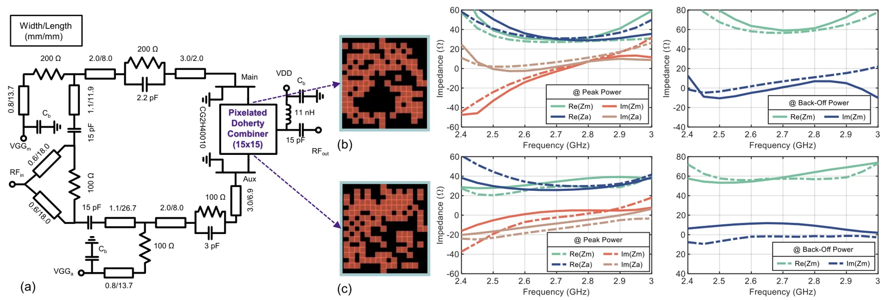
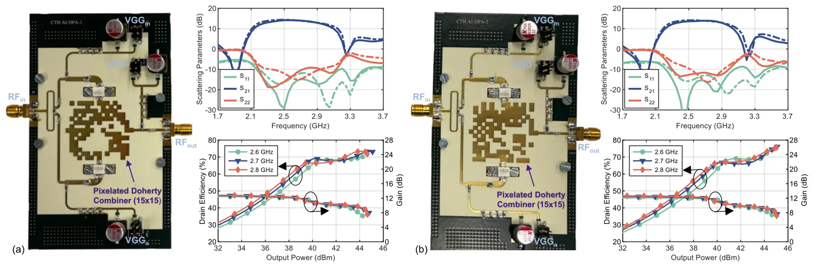
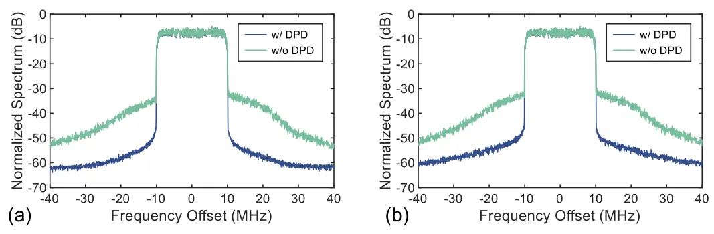
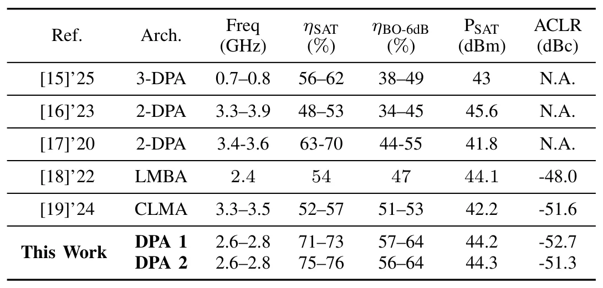

用像素化合成器和双状态阻抗综合进行 Doherty 功放深度学习逆向设计Deep Learning-Driven Inverse Design of Doherty Power Amplifiers Using Pixelated Combiners and Dual-State Impedance Synthesis
与 GNSS/SLAM/三维重建算法几乎无直接关系，只在 RF front-end 自动设计层面有远外围参考价值。
一句话工作总结
该工作用 CNN、像素化布局和遗传算法自动设计 Doherty 功放输出合成器，属于 RF 硬件逆向设计。
摘要
Doherty 功率放大器的输出合成器在单一网络中整合负载调制、阻抗匹配和相位补偿，因此设计和综合较困难。本文提出三端 Doherty combiner 设计方法，把深度卷积神经网络、像素化布局表示和 genetic algorithms 与双状态阻抗综合结合，同时处理峰值功率与 back-off 功率条件。作为概念验证，作者设计并制造了两个 GaN HEMT Doherty PA 原型，二者在 2.6-2.8 GHz 内测得饱和输出功率超过 44.2 dBm，峰值漏极效率超过 71.2%，6 dB back-off 下效率最高 64%；经数字预失真后，相邻信道泄漏比优于 -51.3 dBc。
The output combiner of a Doherty power amplifier (PA) integrates load modulation, impedance matching, and phase compensation within a single network, making its design and synthesis highly challenging. In this paper, we propose a three-port Doherty combiner design methodology that combines deep convolutional neural networks (CNNs), pixelated layout representations, and genetic algorithms (GA) with dual-state impedance synthesis to address both peak and back-off power conditions. As a proof of concept, two GaN HEMT Doherty PA prototypes incorporating three-port pixelated combiners are designed and fabricated. Both prototypes achieve a measured saturated output power exceeding 44.2 dBm with peak drain efficiency above 71.2% within 2.6-2.8 GHz. Furthermore, a drain efficiency as high as 64% is measured at the 6-dB back-off level. After applying digital predistortion, each prototype achieves an adjacent channel leakage ratio (ACLR) better than -51.3 dBc.
中文解读摘录
- 链接：abs / PDF；作者：Han Zhou, Haojie Chang, David Widen, Christian Fager；类别：eess.SP, cs.AI, cs.AR, cs.SY, eess.SY；采集 score=6。
- 核心思路：用 CNN、pixelated layout representations 和 genetic algorithms 自动设计三端 Doherty combiner，并同时满足 peak/back-off 两种功率状态下的阻抗综合。
- 与用户方向的关系：属于射频功放/微波硬件逆向设计，不是 GNSS/SLAM/三维重建论文；仅在“无线系统硬件/信号处理”层面有远外围关系。
- 关注点：一般不建议作为本方向重点阅读；若关注 GNSS 接收机硬件或 RF front-end 自动设计，可低优先级扫读。
图表/页面预览

{kind=link}

{kind=link}

{kind=link}

{kind=link}
